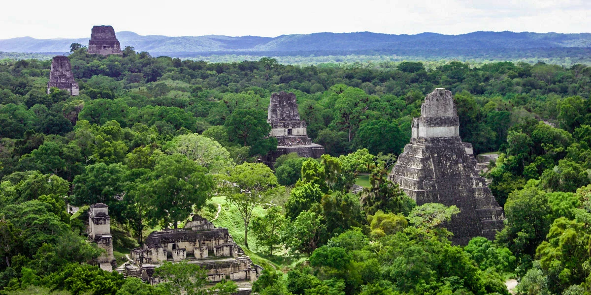
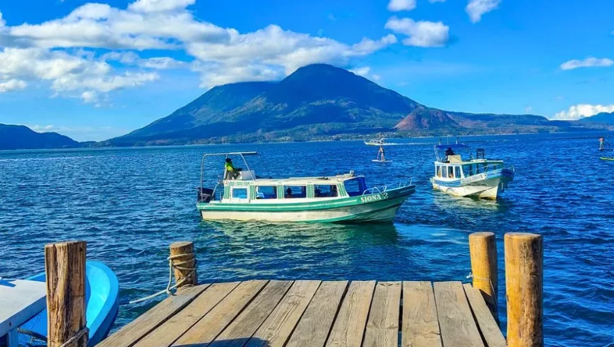
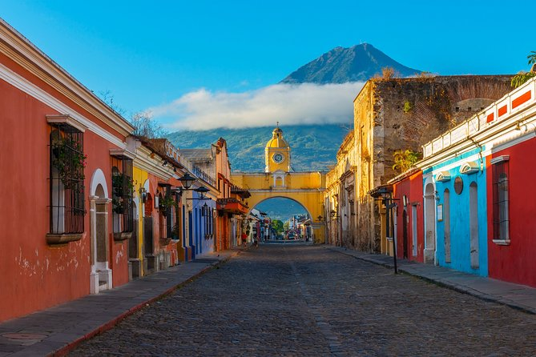
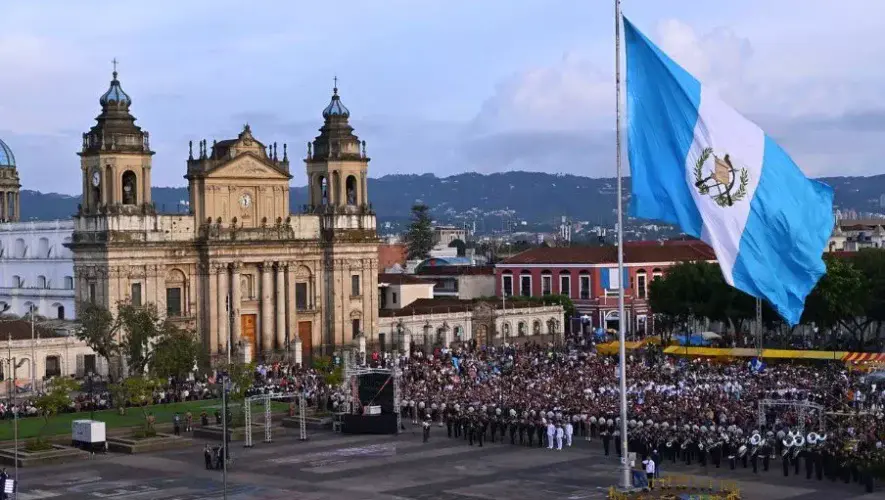
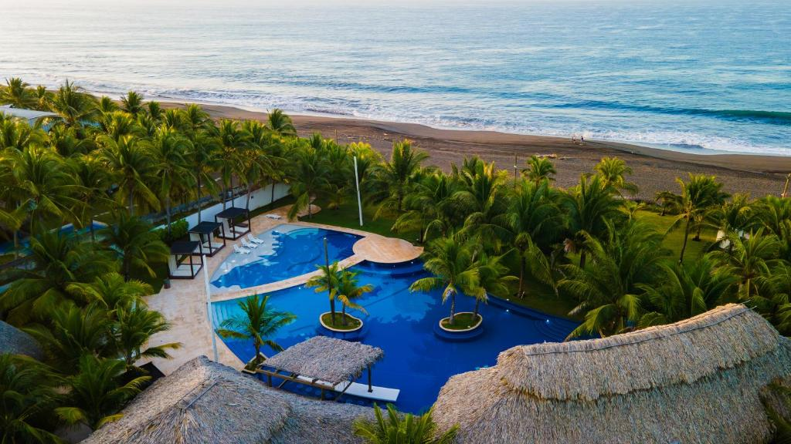
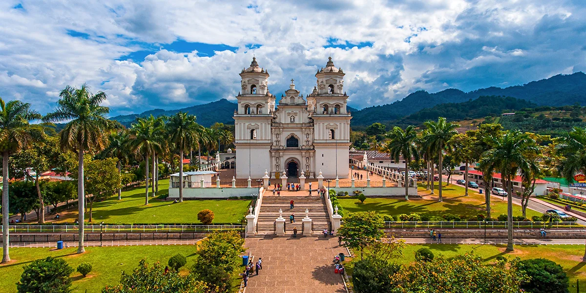
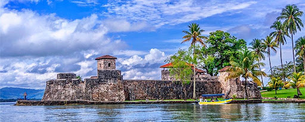

Parque Nacional Tikal
Cultura maya clásica. Era una ciudad poderosa donde se combinaban religión, astronomía y política
Los templos eran centros ceremoniales y de poder
La arquitectura de Tikal es impresionante, con sus pirámides y templos que se elevan majestuosamente sobre la selva.
El Templo del Gran Jaguar es uno de los más emblemáticos, con sus 44 metros de altura y su diseño impresionante.
Además, el Templo IV, con sus 70 metros de altura, ofrece una vista panorámica impresionante de la selva circundante.
La ciudad también cuenta con plazas, palacios y estelas que narran la historia de sus gobernantes y eventos importantes.

lago de Atitlán
El lago de Atitlán es un destino turístico popular en Guatemala, conocido por su belleza natural y su cultura vibrante.
Rodeado por volcanes y pueblos pintorescos, el lago ofrece una experiencia única para los visitantes.
Los pueblos alrededor del lago, como Panajachel, San Pedro La Laguna y Santiago Atitlán, son conocidos por su artesanía, mercados coloridos y tradiciones culturales.
Los visitantes pueden disfrutar de actividades como paseos en bote, senderismo, visitas a comunidades indígenas y la oportunidad de aprender sobre la rica cultura maya que aún perdura en la región.

Antigua Guatemala
Antigua Guatemala es una ciudad colonial ubicada en el corazón de Guatemala, conocida por su arquitectura bien conservada, calles empedradas y rica historia.
Fundada en el siglo XVI, Antigua fue la capital de Guatemala hasta que un terremoto en 1773 la destruyó parcialmente, lo que llevó a la construcción de la nueva capital en la Ciudad de Guatemala.
Hoy en día, Antigua es un destino turístico popular, famoso por sus iglesias barrocas, conventos y plazas.
La ciudad es un centro cultural vibrante, con festivales, mercados de artesanías y una escena gastronómica en crecimiento.
Los visitantes pueden explorar lugares como la Iglesia de La Merced, el Arco de Santa Catalina y el Parque Central, así como disfrutar de la vista de los volcanes cercanos que rodean la ciudad.

Ciudad de Guatemala
La Ciudad de Guatemala, también conocida como Guatemala City, es la capital y la ciudad más grande de Guatemala.
Es un centro político, cultural y económico del país, con una mezcla de arquitectura moderna y colonial.
La ciudad cuenta con una variedad de museos, parques y centros comerciales, así como una vibrante escena artística y gastronómica.
Los visitantes pueden explorar lugares como el Palacio Nacional, la Catedral Metropolitana y el Mercado Central, así como disfrutar de la vida nocturna y la cultura local que ofrece la ciudad.
tambien ofrece una variedad de opciones de entretenimiento, desde teatros y cines hasta eventos culturales y festivales que reflejan la diversidad de la ciudad.
como resultado de su historia y su papel como centro urbano, la Ciudad de Guatemala es un destino que combina lo moderno con lo tradicional, ofreciendo a los visitantes una experiencia única en el corazón de América Central.

Monterrico
Monterrico es un destino turístico popular en Guatemala, conocido por sus playas de arena negra volcánica y su ambiente relajado.
Ubicado en la costa del Pacífico, Monterrico ofrece a los visitantes la oportunidad de disfrutar del sol, el mar y la naturaleza.
Las playas de Monterrico son ideales para nadar, tomar el sol y practicar deportes acuáticos como el surf.
Además, la región es conocida por su biodiversidad, con manglares y reservas naturales que albergan una variedad de flora y fauna.
Los visitantes también pueden participar en actividades como la liberación de tortugas marinas, una experiencia única que contribuye a la conservación de estas especies.

Esquipulas
Esquipulas es una ciudad en el sur de Guatemala, conocida por su rica historia y su entorno natural.
La ciudad alberga importantes sitios arqueológicos y museos que muestran la cultura maya y azteca.
Los turistas pueden disfrutar de la naturaleza en sus alrededores, incluyendo bosques y cascadas.
La ciudad ofrece una experiencia única que combina historia, cultura y naturaleza.
entre los sitios más destacados de Esquipulas se encuentra la Basílica del Cristo y la Iglesia de San Bartolomé, que son importantes lugares de peregrinación para los fieles católicos.
Además, el Parque Nacional Laguna Lachuá, ubicado cerca de Esquipulas, es un destino popular para los amantes de la naturaleza, con su lago cristalino y su biodiversidad única.
La combinación de historia, cultura y belleza natural hace de Esquipulas un destino turístico atractivo para aquellos que buscan una experiencia enriquecedora en Guatemala.

Volcán de pacaya
El Volcán de Pacaya es uno de los volcanes más activos de Guatemala y ofrece una experiencia única para los visitantes interesados en la geología y la naturaleza.
Su actividad volcánica constante lo convierte en un destino popular para los amantes de la aventura y el turismo de naturaleza.
Los visitantes pueden observar la erupción del volcán desde distintas zonas seguras, disfrutar de paisajes volcánicos impresionantes y explorar la biodiversidad de la región.
La combinación de la actividad volcánica y el entorno natural hace del Volcán de Pacaya un destino turístico atractivo para aquellos que buscan una experiencia inolvidable en Guatemala.

Rio Dulce
Río Dulce es un destino turístico en Guatemala, conocido por sus paisajes naturales y su ambiente tranquilo.
La región ofrece actividades como el kayak, el pescado y la observación de aves.
Los visitantes pueden disfrutar de la belleza natural del río y de los pueblos aledaños.
Río Dulce es un lugar ideal para aquellos que buscan una experiencia relajante en medio de la naturaleza.
Además, Río Dulce es famoso por su biodiversidad, con una gran variedad de flora y fauna que se puede observar durante las excursiones en bote o caminatas por la selva.
Los visitantes también pueden explorar el Castillo de San Felipe, una fortaleza histórica construida para proteger la región de los piratas en el siglo XVII.
La combinación de la belleza natural, la historia y la cultura hace de Río Dulce un destino turístico atractivo para aquellos que buscan una experiencia auténtica en Guatemala.
